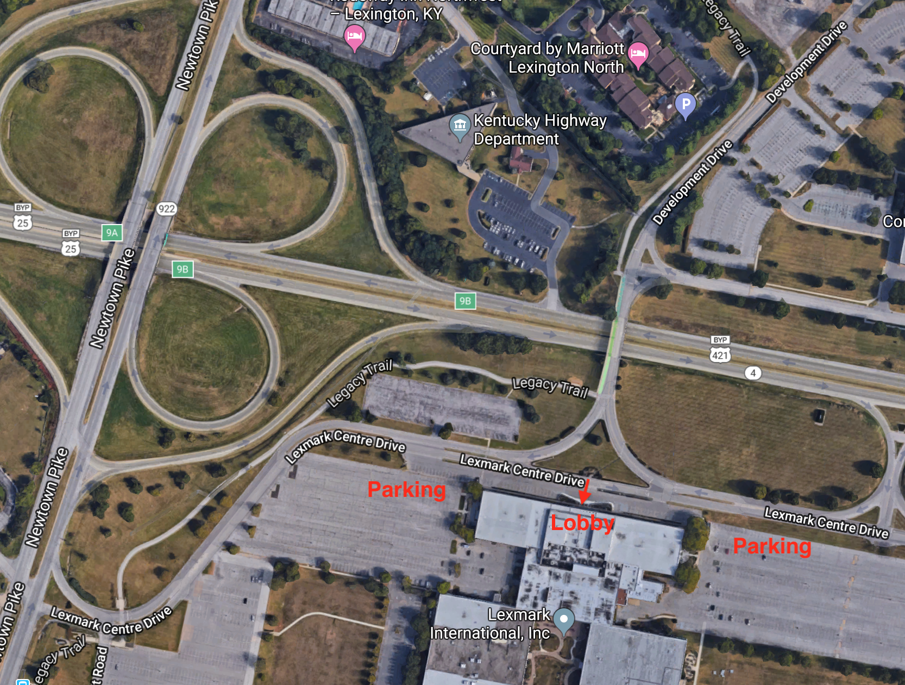
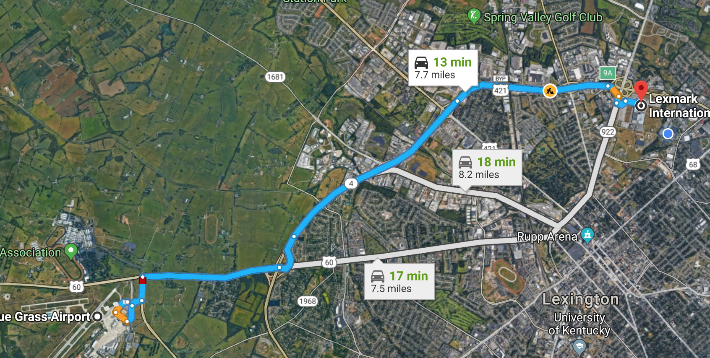
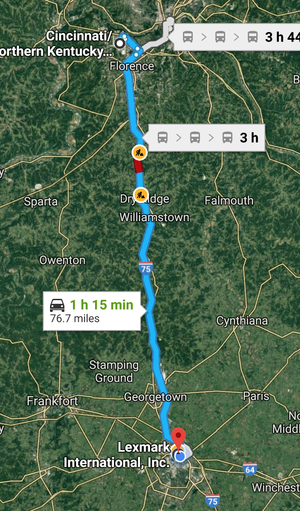
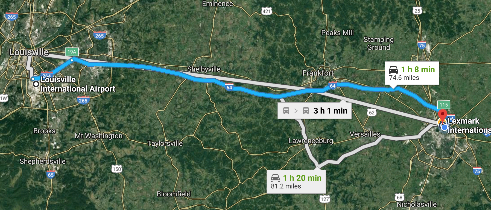

This PWG face-to-face meeting will be held on April 16 - 18, 2019, hosted by Lexmark at their headquarters at 740 New Circle Road, Lexington, KY 94087 [ map ]
A light breakfast and lunch will be served each day.
All sessions will be held in Lexmark's main building (Building 004). Parking is available on either side of the building. Come in through the front doors into the main lobby and to the reception desk to check in. Each visitor will get a badge when they sign in. In order to speed up that process, I'll need everyone's first and last name and email address so that badges will be ready to go beforehand. The guest WiFi is also individualized now, so everyone will get their login credentials at that time. Someone will escort you to the Board Room once check-in is complete.
Travel and hotel recommendations are at the bottom of the page.

There is no registration fee for this meeting.
Please respond to the PWG April 2019 Face-to-Face Meeting Survey by April 2, 2019 whether you are planning to attend the meeting in person, by phone, or not at all. This will help us plan for services and make any necessary reservations.
Call-in toll-free number (US/Canada): +1 866 469-3239
Call-in toll number (US/Canada): +1 650 429-3300
Call-in toll number (US/Canada): +1 408 856-9570
Attendee access code: (by request only)
To join the online meeting:
Note:All times are local to the venue - Eastern Daylight Time (EDT) (UTC−04:00).
Discussions at PWG face-to-face meetings are covered by the PWG Policy on Intellectual Property and Confidentiality - basically everything we discuss is non-confidential and can be included in an open standard.
| Date | Times | Description |
|---|---|---|
| April 16 | 8:30 AM to 9:00 AM | Breakfast |
| 9:00 AM to 10:15 AM | PWG Plenary | |
| 10:15 AM to 10:30 AM | Break | |
| 10:30 AM to 11:00 AM | OpenPrinting: Plenary | |
| 11:00 AM to 12:00 PM | OpenPrinting: CUPS Plenary | |
| 12:00 PM to 1:00 PM | Lunch | |
| 1:00 PM to 2:00 PM | OpenPrinting: Project Updates 2019 | |
| 2:00 PM to 3:00 PM | OpenPrinting: Status of Chrome OS | |
| 3:00 PM to 3:15 PM | Break | |
| 3:15 PM to 4:00 PM | OpenPrinting: cups-filters and ippusbxd | |
| 4:00 PM to 5:00 PM | OpenPrinting: Status of Ghostscript and MuPDF | |
| April 17 | 8:30 AM to 9:00 AM | Breakfast |
| 9:00 AM to 9:30 AM | IPP WG: Status | |
| 9:30 AM to 10:15 AM | IPP WG: 3D Printing Topics | |
| 10:15 AM to 10:30 AM | Break | |
| 10:30 AM to 12:00 PM | IPP WG: System Service · Demo | |
| 12:00 PM to 1:00 PM | Lunch | |
| 1:00 PM to 2:00 PM | IPP WG: IPP Everywhere v1.1 · IPP Everywhere Self Cert v1.1 · Demo | |
| 2:00 PM to 3:30 PM | IPP WG: JPS2v2 - IPP Enterprise Printing Extensions v1.0 · IPP Job Extensions v2.0 (JOBEXT) | |
| 3:30 PM to 3:45 PM | Break | |
| 3:45 PM to 5:00 PM | IPP WG: Job Accounting BoF | |
| April 18 | 8:30 AM to 9:00 AM | Breakfast |
| 9:00 AM to 11:00 AM | IDS WG: Status and Discussion · HCD Security Guidelines whitepaper | |
| 11:00 AM to 12:15 PM | IPP WG: Encrypted Jobs and Documents | |
| 12:15 PM to 12:30 PM | IPP WG: Next Steps | |
| 12:30 PM to 1:30 PM | Lunch |
The closest Airport to Lexmark is Bluegrass Airport (LEX). It's about a 15 minute drive to downtown Lexington, and a 20 minute drive to Lexmark.
Since Bluegrass Airport is fairly small, flights can be limited. Cincinnati (CVG) and Louisville (SDF) are reasonable alternatives with a broader availability of flights. Both are fairly easy ~75 minute drives to Lexington, almost entirely via interstate.
Cincinnati:
Louisville:
